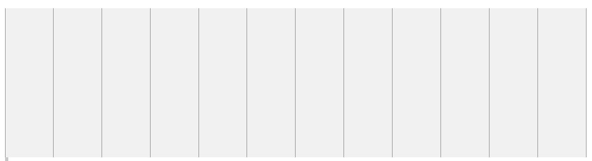

Viewport
Viewport is het zichtbare gebied op een webpagina voor de gebruiker
Met de komst van mobiele toestellen, werden die pagina's te groot, te breed, ... En om dat te fixen gingen browsers op mobiele toestellen de webpagina gaan verkleinen om op het scherm te passen. => Quick Fix
In HTML5 kunnen webontwikkelaars de controle over de viewport overnemen. Dit via de <meta> tag
<meta name="viewport" content="width=device-width, initial-scale=1.0">
width=device-width : stelt de breedte van de pagina in op de breedte van het device
initial-scale=1.0 : stelt het initial zoom level in bij het laden van de pagina
Enkele tips:
- Gebruikers mogen enkel verticaal scrollen, nooit horizontaal
- Gebruiker die moet zoomen => slechte UX
- Gebruik geen grote, brede fixed width elementen
- Gebruik CSS3 Media Queries
Images meeschalen

Laat images meeschalen met de viewport
img {
width: 100%;
height: auto;
display: block;
}
img {
max-width: 100%; /* laat image meeschalen, maar nooit groter dan zijn origineel formaat */
height: auto;
display: block;
}
Media Queries
Gebruik van Media Queries is een CSS3 techniek
Met de @media rule kan een webontwikkelaar CSS properties toevoegen enkel en alleen als aan een bepaalde conditie is voldaan. Zo kan je verschillende CSS rules definiëren voor verschillende soorten devices.
Meestal wordt de breedte van het scherm als uitgangspunt genomen. Ook wel breakpoint genoemd
Meer op w3schools
Mobile First
Mobile First wil zeggen: Altijd eerst voor mobile ontwikkelen voordat je ontwikkelt voor een ander device!
Maw: de CSS voor mobile is de standaard. Deze CSS heeft geen mediaqueries. Moet onze pagina er anders uitzien op andere devices, dan voegen we extra CSS toe met mediaqueries voor die devices
Grid View
Many web pages are based on a grid-view, which means that the page is divided into columns:
Using a grid-view is very helpful when designing web pages. It makes it easier to place elements on the page.

* {
box-sizing: border-box;
}
/*zorgt ervoor dat padding en border zijn inbegrepen in de totale breedte en hoogte van een element*/
.col-1 {width: 8.33%;}
.col-2 {width: 16.66%;}
.col-3 {width: 25%;}
.col-4 {width: 33.33%;}
.col-5 {width: 41.66%;}
.col-6 {width: 50%;}
.col-7 {width: 58.33%;}
.col-8 {width: 66.66%;}
.col-9 {width: 75%;}
.col-10 {width: 83.33%;}
.col-11 {width: 91.66%;}
.col-12 {width: 100%;}
[class*="col-"]
{
float: left;
padding: 15px;
}
Bootstrap
Bootstrap is gratis en open source. In dit framework vind je sjablonen gebaseerd op HTML en CSS. Deze set van elementen voor HTML en CSS is vrij uitgebreid. Ze kunnen gebruikt worden voor typografie, formulieren, knoppen, navigatie en andere interfaceonderdelen. Het framework bevat ook Javascript-extensies.
Bootstrap werd bedoeld om het ontwikkelen van websites eenvoudiger te maken. Het framework werd ontwikkeld door twee ontwikkelaars van Twitter: Mark Otto en Jacob Thornton. Zij zorgden er met Bootstrap voor dat de interface van de microblogdienst op een consistente manier kon worden ontwikkeld. In het begin was het de bedoeling dat het framework enkel binnen Twitter zou worden gebruikt.
The Bootstrap 4 grid system has five classes:
- .col- (extra small devices - screen width less than 576px)
- .col-sm- (small devices - screen width equal to or greater than 576px)
- .col-md- (medium devices - screen width equal to or greater than 768px)
- .col-lg- (large devices - screen width equal to or greater than 992px)
- .col-xl- (xlarge devices - screen width equal to or greater than 1200px)
Responsive Columns
Resize the browser window to see the effect.
The columns will automatically stack on top of each other when the screen is less than 576px wide.
.col-md-3
.col-md-3
.col-md-3
.col-md-3